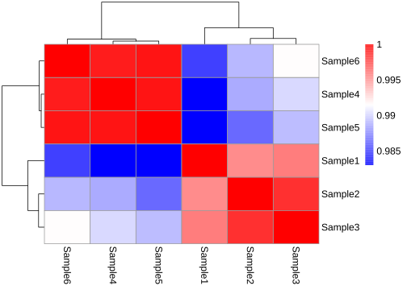

Code
library(pheatmap)pheatmap
library(pheatmap)# read test matrix
test <- read.delim("data/heatmap/heatmap.txt",header = T,row.names = 1,sep = "\t")
test
#> Sample1 Sample2 Sample3 Sample4 Sample5
#> Gene1 1.276788667 1.39970122 1.072416992 0.880483730 0.82856234
#> Gene2 0.019548561 0.02705895 0.014687243 0.044248741 0.05737813
#> Gene3 2.395132841 3.07937035 2.256007527 2.415867713 2.48658672
#> Gene4 0.083182670 0.14317924 0.156855571 0.083322439 0.17252389
#> Gene5 0.027406019 0.01016765 0.020571287 0.049950368 0.07319428
#> Gene6 0.015444824 0.01451434 0.013529512 0.008938481 0.02281410
#> Gene7 0.027244791 0.06197748 0.083861020 0.752735813 0.66726281
#> Gene8 0.502507993 0.42464105 0.470344575 0.533677126 0.32546274
#> Gene9 0.854770698 1.01076161 0.831606319 1.207970172 0.92257052
#> Gene10 2.366194466 2.13447866 1.956382548 0.962606527 1.31203300
#> Gene11 2.155082130 1.98799347 1.788864352 3.616962038 3.06590887
#> Gene12 0.129310440 0.09191911 0.104282037 0.243862580 0.24021022
#> Gene13 0.605845552 0.58849974 0.574435835 0.432609433 0.33815736
#> Gene14 2.281032962 1.72559272 2.367729880 1.788446640 1.90978813
#> Gene15 1.098679859 1.12561208 1.114335742 0.721540287 0.62703942
#> Gene16 3.768603241 3.83448142 3.487697474 3.731478791 3.29533360
#> Gene17 0.203230074 0.05219244 0.014276941 0.032323746 0.01202423
#> Gene18 2.152050491 1.85644729 3.813717676 0.640071180 0.54325715
#> Gene19 0.516357072 0.31591833 0.276653295 0.366272032 0.54603307
#> Gene20 2.280619557 2.36036186 2.589737224 4.425116212 4.39044996
#> Gene21 6.825873663 6.68907517 7.000483477 5.783822390 5.86881864
#> Gene22 0.444148936 0.52574211 0.603483647 0.382820066 0.48857265
#> Gene23 6.425283872 5.84820317 7.471677403 4.017770676 4.56303969
#> Gene24 7.981617242 5.09157053 8.114701616 11.528060240 13.19384251
#> Gene25 6.000165362 5.96854511 5.584680317 4.962957583 4.91216906
#> Gene26 3.106879065 4.39925858 2.880084674 1.836868100 1.81948848
#> Gene27 0.974603131 1.10357706 1.088201858 1.090548131 0.80487377
#> Gene28 0.090236743 0.04519600 0.045398476 0.109017286 0.06329643
#> Gene29 1.505897916 1.21549506 1.164930941 1.094930273 1.07443412
#> Gene30 0.418214640 0.48694221 0.696402671 2.029101298 1.40913530
#> Gene31 12.094173740 6.11129554 5.846019156 1.705766996 2.03015108
#> Gene32 14.755815240 14.35665477 14.220752920 13.041109820 13.04242876
#> Gene33 8.567688237 8.45699505 8.462020933 6.893400155 6.32240155
#> Gene34 28.143258740 29.04805378 27.188386100 21.545128800 20.25762280
#> Gene35 10.272571930 14.51711069 13.670634660 15.391971720 13.49886440
#> Gene36 1.230432146 1.33515921 1.281579532 0.975571373 0.85519141
#> Gene37 2.105335685 2.12880737 2.290242914 2.313335270 2.16477765
#> Gene38 79.213978610 81.18377735 77.198186310 81.823794310 79.83893089
#> Gene39 8.132510197 7.49287631 6.970690849 8.731115630 7.74492270
#> Gene40 0.753541506 0.83845132 1.001006155 0.997615243 0.60000439
#> Gene41 0.325474038 0.30016322 0.350076442 0.200246949 0.21014691
#> Gene42 0.797210892 1.09573409 0.763174744 0.803602557 0.35076420
#> Gene43 0.574330283 0.68311340 0.591644997 0.388098005 0.32650509
#> Gene44 14.185315840 14.51019448 14.120137460 10.248523150 9.98540723
#> Gene45 0.265364899 0.17134202 0.109452626 0.281498160 0.48228569
#> Gene46 10.906735750 11.40647910 11.379215720 10.631052680 10.69211442
#> Gene47 5.665169221 5.94489169 5.530583178 5.948818516 5.76601091
#> Gene48 2.109194135 2.17929565 2.348260137 2.454241720 2.34274366
#> Gene49 0.004976574 0.00442388 0.006059272 0.025406740 0.03158951
#> Gene50 0.578367876 0.88617313 0.713324361 0.222133450 0.18598655
#> Sample6
#> Gene1 0.69472331
#> Gene2 0.05942839
#> Gene3 2.43571945
#> Gene4 0.06852347
#> Gene5 0.06896061
#> Gene6 0.01208279
#> Gene7 0.69213029
#> Gene8 0.48171690
#> Gene9 1.06054591
#> Gene10 1.32278532
#> Gene11 3.51641291
#> Gene12 0.30601099
#> Gene13 0.41972532
#> Gene14 1.63142375
#> Gene15 0.66917172
#> Gene16 3.27913994
#> Gene17 0.01399543
#> Gene18 0.86020629
#> Gene19 0.58455431
#> Gene20 4.81441537
#> Gene21 5.68732288
#> Gene22 0.47799947
#> Gene23 5.39830421
#> Gene24 11.26897438
#> Gene25 5.28402767
#> Gene26 2.04171782
#> Gene27 1.04176371
#> Gene28 0.03033377
#> Gene29 1.21975286
#> Gene30 2.41736177
#> Gene31 1.87294193
#> Gene32 13.67646890
#> Gene33 5.82982434
#> Gene34 20.53076632
#> Gene35 12.53599826
#> Gene36 0.86309763
#> Gene37 2.43503104
#> Gene38 76.55265785
#> Gene39 7.53249882
#> Gene40 0.95383044
#> Gene41 0.09595213
#> Gene42 0.81975056
#> Gene43 0.43375747
#> Gene44 10.42543915
#> Gene45 0.38292966
#> Gene46 10.73717544
#> Gene47 5.88971626
#> Gene48 2.41323130
#> Gene49 0.06582145
#> Gene50 0.27235908
sample_group <- read.delim("data/heatmap/sample.class.txt",header = T,row.names = 1,sep = "\t")
gene_group <- read.delim("data/heatmap/gene.class.txt",header = T,row.names = 1,sep = "\t")pheatmap(test,
annotation_legend = T,#legend_breaks = seq(-1,1,0.2), legend_labels = seq(-1,1,0.2),
show_rownames = T,show_colnames = T,
fontsize = 12,
color = colorRampPalette(c("#0000ff","#ffffff","#ff0000"))(200),
border_color = NA,
scale = "row", # 归一化
cluster_rows = T,cluster_cols = T,clustering_distance_rows = "correlation",
display_numbers = TRUE, number_format = "%.1e",
treeheight_row = 12,
treeheight_col = 12,
annotation_row = gene_group,annotation_col = sample_group,
)
#> Warning: The input is a data frame, convert it to the matrix.
r <- cor(test,method = "pearson",use = "pairwise.complete.obs")
r
#> Sample1 Sample2 Sample3 Sample4 Sample5 Sample6
#> Sample1 1.0000000 0.9952840 0.9957627 0.9830767 0.9830091 0.9851351
#> Sample2 0.9952840 1.0000000 0.9983278 0.9887180 0.9865182 0.9891590
#> Sample3 0.9957627 0.9983278 1.0000000 0.9902566 0.9893629 0.9915575
#> Sample4 0.9830767 0.9887180 0.9902566 1.0000000 0.9992817 0.9990420
#> Sample5 0.9830091 0.9865182 0.9893629 0.9992817 1.0000000 0.9993162
#> Sample6 0.9851351 0.9891590 0.9915575 0.9990420 0.9993162 1.0000000
pheatmap(r,fontsize = 12,
color = colorRampPalette(c("#0000ff","#ffffff","#ff0000"))(200),)
pheatmap(test, kmeans_k = 2,
cellwidth = 30,cellheight = 25,)
#> Warning: The input is a data frame, convert it to the matrix.
#> Warning: argument `kmeans_k` is not suggested to use in pheatmap -> Heatmap
#> translation because it changes the input matrix. You might check
#> `row_km` and `column_km` arguments in Heatmap().
geom_tile()
# 设置随机数种子以确保结果的可重复性
set.seed(10)
# 生成随机数据集
mydata <- tibble(
year = 2000:2024,
lung = runif(25),
liver = runif(25),
bone = runif(25),
luk = runif(25),
eso = runif(25),
gas = runif(25),
eye = runif(25),
brain = runif(25),
pan = runif(25),
kidney = runif(25),
breast= runif(25),
) |> pivot_longer(cols = -1,
names_to = "cancer",
values_to = "morbidity")
ggplot(mydata, aes(year, cancer)) +
geom_tile(aes(fill =morbidity)) +
scale_fill_gradient(low = "white", high = "red")
ComplexHeatmap
https://jokergoo.github.io/ComplexHeatmap-reference/book/
if(!require(ComplexHeatmap)) BiocManager::install("ComplexHeatmap")set.seed(123)
nr1 = 4; nr2 = 8; nr3 = 6; nr = nr1 + nr2 + nr3
nc1 = 6; nc2 = 8; nc3 = 10; nc = nc1 + nc2 + nc3
mat = cbind(rbind(matrix(rnorm(nr1*nc1, mean = 1, sd = 0.5), nrow = nr1),
matrix(rnorm(nr2*nc1, mean = 0, sd = 0.5), nrow = nr2),
matrix(rnorm(nr3*nc1, mean = 0, sd = 0.5), nrow = nr3)),
rbind(matrix(rnorm(nr1*nc2, mean = 0, sd = 0.5), nrow = nr1),
matrix(rnorm(nr2*nc2, mean = 1, sd = 0.5), nrow = nr2),
matrix(rnorm(nr3*nc2, mean = 0, sd = 0.5), nrow = nr3)),
rbind(matrix(rnorm(nr1*nc3, mean = 0.5, sd = 0.5), nrow = nr1),
matrix(rnorm(nr2*nc3, mean = 0.5, sd = 0.5), nrow = nr2),
matrix(rnorm(nr3*nc3, mean = 1, sd = 0.5), nrow = nr3))
)
mat = mat[sample(nr, nr), sample(nc, nc)] # random shuffle rows and columns
rownames(mat) = paste0("row", seq_len(nr))
colnames(mat) = paste0("column", seq_len(nc))Heatmap(mat)
set.seed(123)
mat = matrix(rnorm(100), 10)
rownames(mat) = paste0("R", 1:10)
colnames(mat) = paste0("C", 1:10)
column_ha = HeatmapAnnotation(foo1 = runif(10), bar1 = anno_barplot(runif(10)))
row_ha = rowAnnotation(foo2 = runif(10), bar2 = anno_barplot(runif(10)))
Heatmap(mat, name = "mat", top_annotation = column_ha, right_annotation = row_ha)